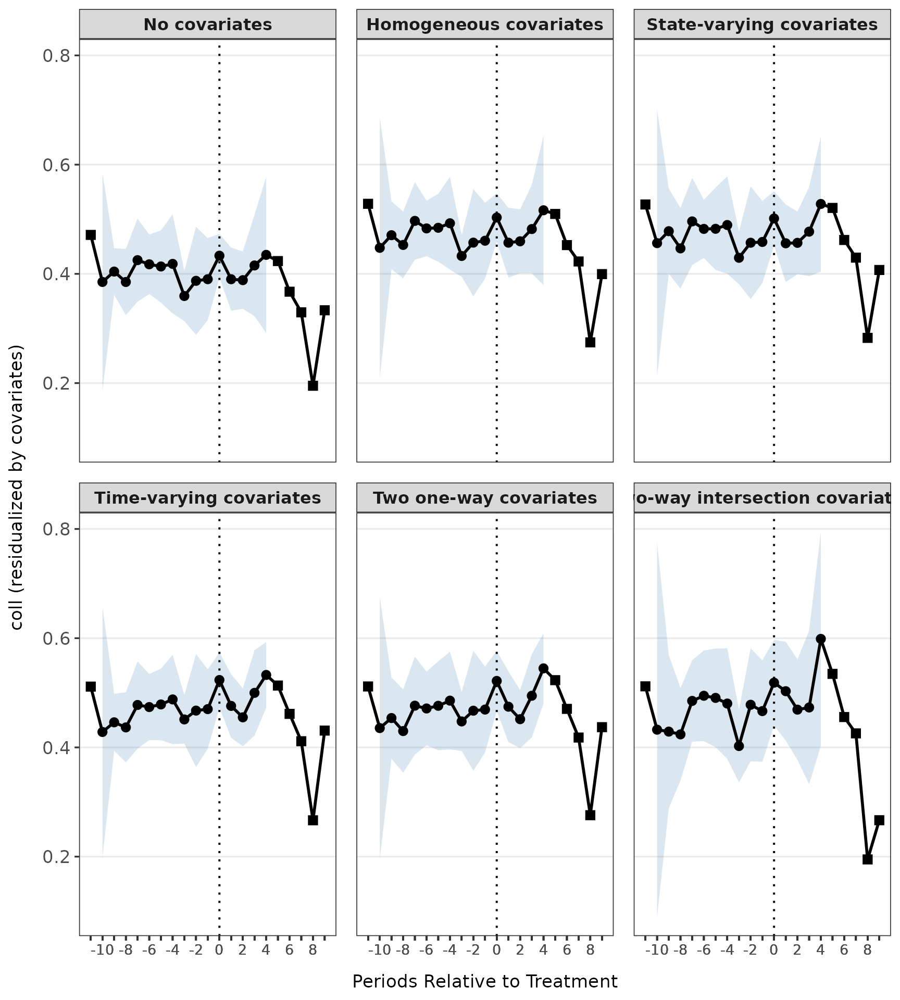
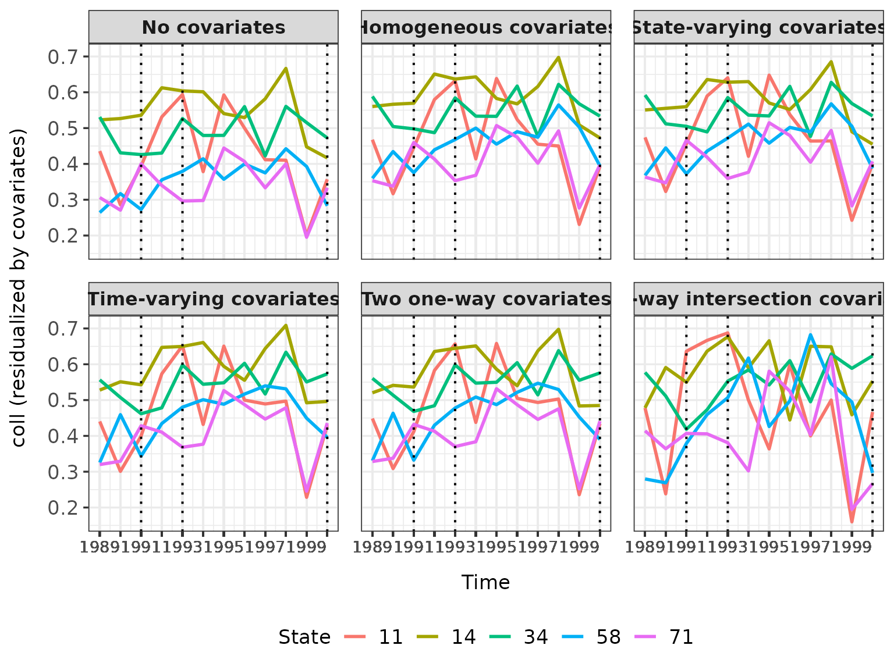

Introduction
The didintrjl package is an R wrapper for the Julia package DiDInt.jl, which implements intersection difference-in-differences (DID-INT); a method developed by Karim & Webb (2025). DID-INT allows for unbiased estimation of the average treatment effect on the treated (ATT) when the common causal covariates (CCC) assumption is violated; that is, when the effects of covariates on the outcome of interest may vary by state, time, or both. It supports common or staggered adoption.
Because didintrjl interfaces with Julia via JuliaConnectoR,
the examples below require a working Julia installation with
DiDInt.jl available (see the README for installation
details). They are evaluated only when juliaSetupOk()
returns TRUE and the DiDInt.jl package can
be found.
The two functions are didint(), which estimates ATT, and
didint_plot(), which produces parallel trends or event
study plots.
1. Estimation
didint() returns an object of class
DiDIntObj with three S3 methods: print(),
summary(), and coef(). Each accepts a
level argument of either "agg" or
"sub" to distinguish aggregate from sub-aggregate results.
In a staggered adoption setting with several treatment times,
level = "sub" returns results for the distinct treatment
times, whereas level = "agg" returns the aggregated
results.
# Load the example data
df <- read.csv(system.file("extdata", "merit.csv", package = "didintrjl"))
# Estimate the ATT
res <- didint("coll", "state", "year", df, verbose = FALSE,
treated_states = c(71, 58, 64, 59, 85, 57, 72, 61, 34, 88),
treatment_times = c(1991, 1993, 1996, 1997, 1997, 1998,
1998, 1999, 2000, 2000))
summary(res)
#>
#> Model Specification: Two-way DID-INT
#> Weighting: both
#> Aggregation: cohort
#> Period Length: 1 year
#> First Period: 1989
#> Last Period: 2000
#> Permutations: 999
#>
#> Aggregate Results:
#> ATT Std. Error p-value RI p-value Jackknife SE Jackknife p-value
#> 0.04582252 0.01159691 0.007526681 0.1391391 0.01520398 0.00404305
#>
#> Subaggregate Results:
#> Treatment Time ATT SE p-value RI p-val JK SE JK p-val Weight
#> --------------------------------------------------------------------------------------------------------------
#> 1991-01-01 0.0529 0.0221 0.0172 0.5005 NA NA 0.2018
#> 1993-01-01 0.0236 0.0166 0.1554 0.6937 NA NA 0.1915
#> 1996-01-01 0.0564 0.0242 0.0208 0.4945 NA NA 0.0757
#> 1997-01-01 0.0711 0.0230 0.0023 0.2062 0.0257 0.0080 0.3211
#> 1998-01-01 0.0485 0.0329 0.1427 0.4585 0.0838 0.5650 0.1086
#> 1999-01-01 0.0120 0.0150 0.4235 0.8759 NA NA 0.0355
#> 2000-01-01 -0.0331 0.0320 0.3081 0.6847 0.0966 0.7336 0.0658
# Aggregate and sub-aggregate results can also be accessed directly
res$agg
#> att se pval ri_pval jknife_se jknife_pval
#> 1 0.04582252 0.01159691 0.007526681 0.1391391 0.01520398 0.00404305
res$sub
#> group att se pval ri_pval jknife_se
#> 1 1991-01-01 0.05290996 0.02211803 0.017190246 0.5005005 NA
#> 2 1993-01-01 0.02359277 0.01657012 0.155433859 0.6936937 NA
#> 3 1996-01-01 0.05643511 0.02422739 0.020797631 0.4944945 NA
#> 4 1997-01-01 0.07111675 0.02296333 0.002287606 0.2062062 0.02574683
#> 5 1998-01-01 0.04854361 0.03290810 0.142653420 0.4584585 0.08378975
#> 6 1999-01-01 0.01204398 0.01497416 0.423539176 0.8758759 NA
#> 7 2000-01-01 -0.03306235 0.03203587 0.308102279 0.6846847 0.09660284
#> jknife_pval weights
#> 1 NA 0.20179564
#> 2 NA 0.19153484
#> 3 NA 0.07567336
#> 4 0.008012064 0.32107738
#> 5 0.564954173 0.10859342
#> 6 NA 0.03548525
#> 7 0.733597087 0.065840102. Plotting
didint_plot() returns an object of class
DiDIntPlotObj with one S3 method: plot(). It
can produce either an event study plot (event = TRUE) or a
parallel trends plot (the default). The object also stores the
underlying plotting data in DiDIntPlotObj$data, so you can
build your own customized plots if you wish.
2.1 Event Study Plot
res_event <- didint_plot("coll", "state", "year", df, event = TRUE,
treated_states = c(71, 58, 64, 59, 85, 57,
72, 61, 34, 88),
treatment_times = c(1991, 1993, 1996, 1997, 1997,
1998, 1998, 1999, 2000, 2000),
covariates = c("asian", "black", "male"))
plot(res_event)
2.2 Parallel Trends Plot
# Using a subset of states to keep the plot readable
df_sub <- df[df$state %in% c(71, 58, 11, 34, 14), ]
res_parallel <- didint_plot("coll", "state", "year", df_sub,
treatment_times = c(1991, 1993, 2000),
covariates = c("asian", "black", "male"))
plot(res_parallel)
For both plot types you can choose which combination of plots to view
via the ccc argument,
e.g. plot(res_parallel, ccc = "state") or
plot(res_event, ccc = c("none", "hom", "int")). The
plotting data itself is available via res_parallel$data and
res_event$data.
References
You can access citations by calling
citation("didintrjl").
Karim, S. and Webb, M. D. 2025. Good Controls Gone Bad: Difference-in-Differences with Covariates. arXiv preprint arXiv:2412.14447. https://arxiv.org/abs/2412.14447